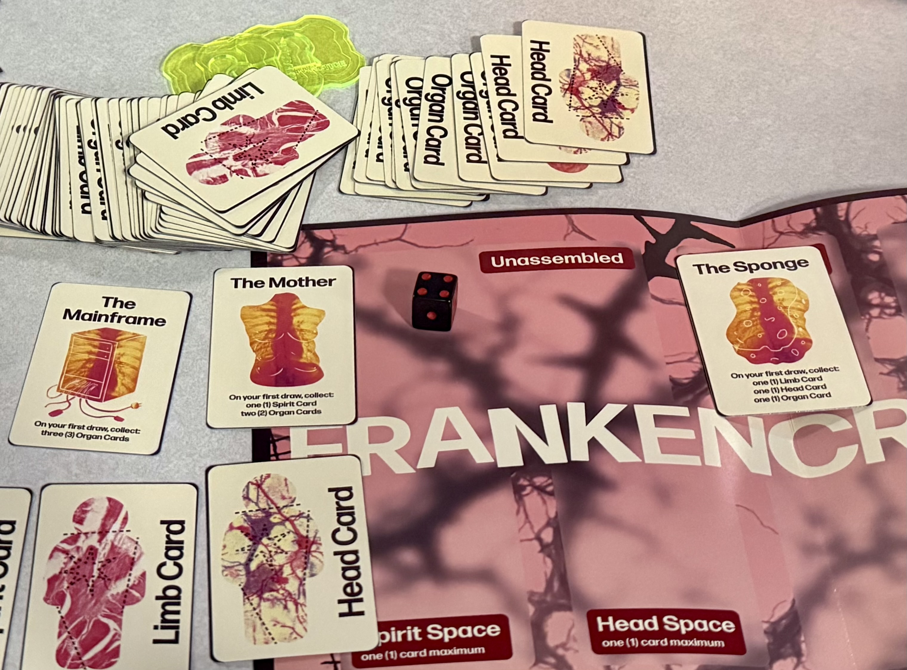
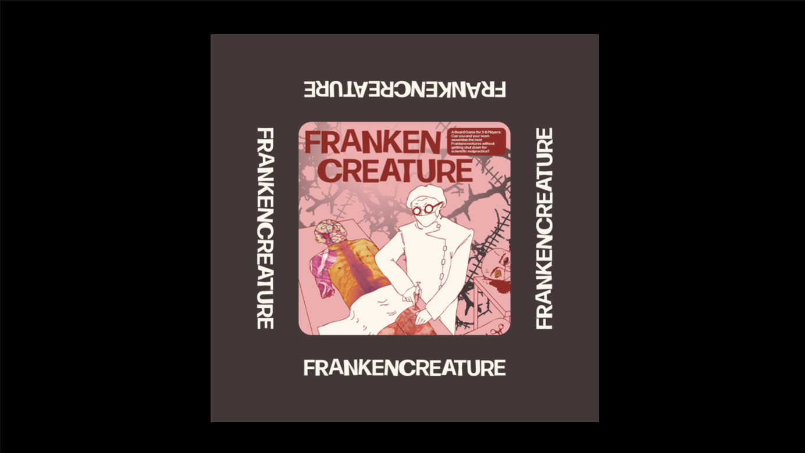
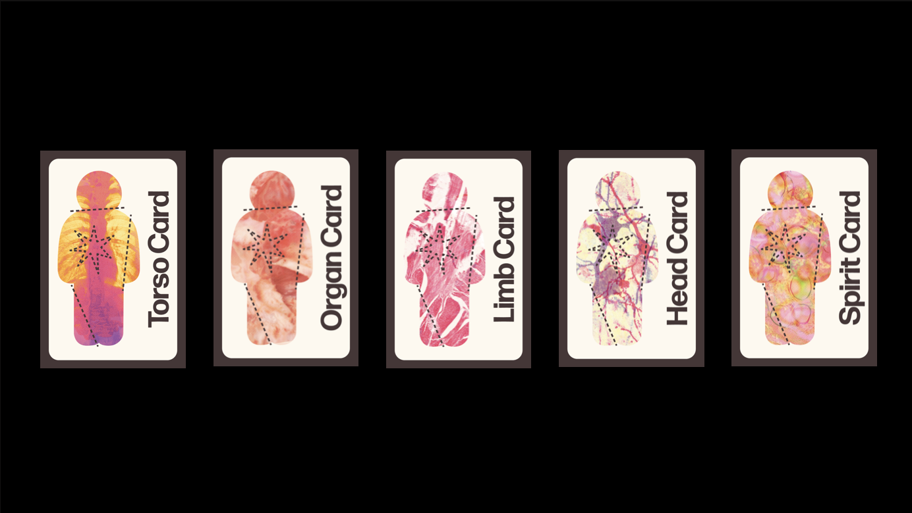
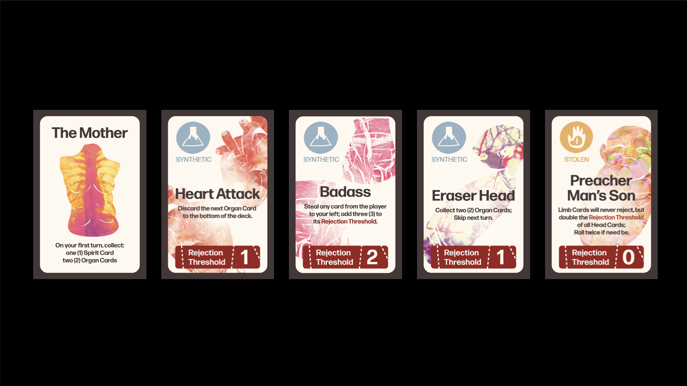
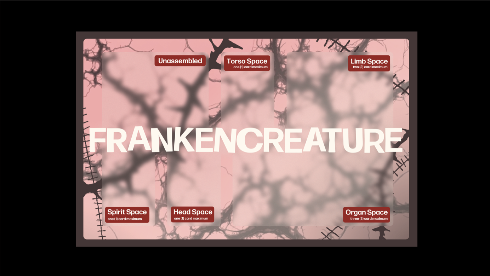
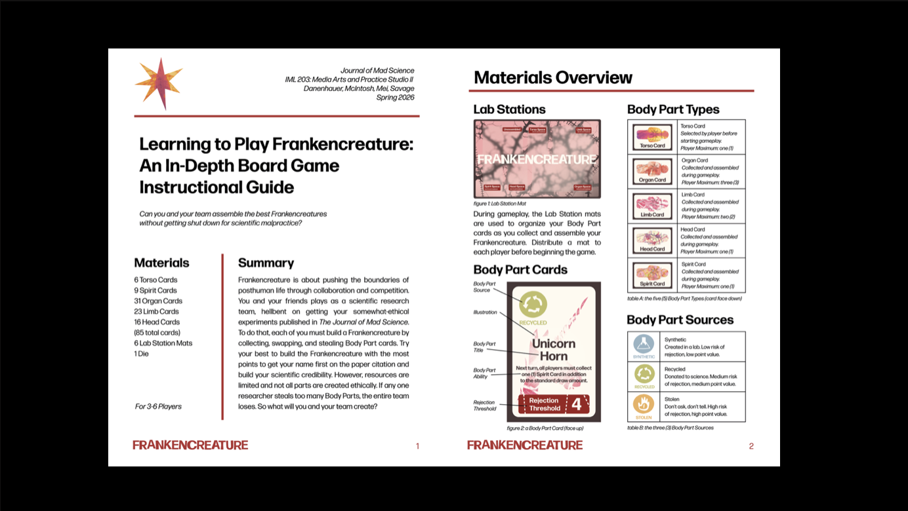
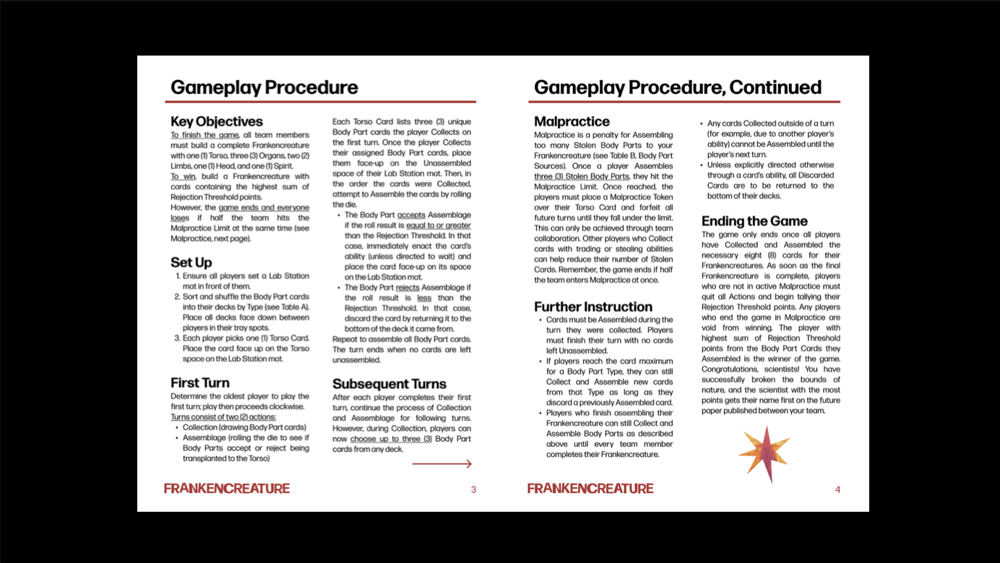

frankencreature

Frankencreature is a collaborative board game for 3–6 players in which each team works together to build complete creatures from collected body parts. Players draw and assemble cards representing limbs, organs, heads, and spirits, trying to complete their Frankencreature while managing risk, timing, and shared strategy.
The game centers on the tension between construction and failure. During play, body parts may be accepted or rejected based on dice rolls and rejection thresholds, while malpractice rules punish players for collecting too many stolen parts. This system turns the act of building into a balance between ambition, cooperation, and careful decision-making.
Visually, the project draws on Frankenstein-inspired imagery and laboratory aesthetics, combining anatomical graphics, experimental typography, and a pink-red palette to create a playful but uncanny tone. The design treats the board game as both an interactive system and a graphic world, where narrative, mechanics, and visual identity support one another.
For this project, I developed the visual direction of the game and contributed to the design of its mechanics. The result is a board game that mixes strategy, chance, and collaborative play into a creature-building experience shaped by both scientific experimentation and playful chaos.
game materials




instructions

